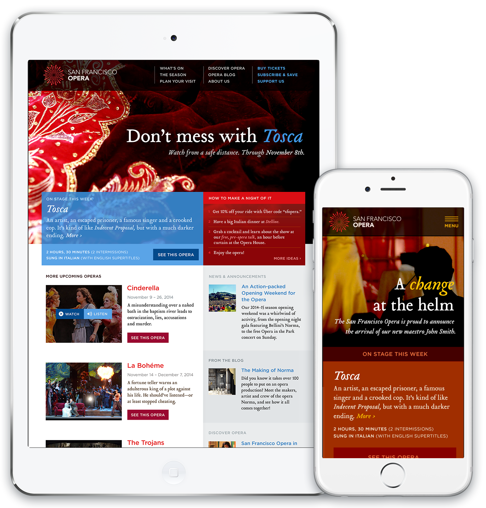

Tasked with giving the San Francisco Opera a fresh face and modern voice, the design team at Mule took three different approaches to the redesign. I chose to pursue a direction and written tone that aimed to welcome and educate a younger audience—individuals we learned were eager to experience new things, but who were skeptical that the opera could be “their thing.”
Concurrently, I wanted to reignite the excitement and passion in existing Opera-lovers. We spoke to many who were loyal opera-goers, and didn’t intend to stop attending, but felt a rennaisance was due, and who, somewhat surprisingly, expressed interest in seeing more young people in the audience.
The resulting approach focused on “making a night of it,” breaking the stigmas, misconceptions, and cliches around the opera in general, and developing a more straightforward approach to navigating the show schedule. Did you know that you can, in fact, wear jeans to the opera? You can!
I also wanted to raise the intrigue level, and really draw the audience in, by offering a more dynamic, yet intimate experience with the elements and performers. The photography on most opera sites is shot from afar, showing the whole stage. This made it feel like the audience was held at a distance, and made the experience feel cold and two-dimensional. I wanted to see the dust in the spotlights, the glistening sweat on the performer’s brow, the sequins hand-stitched on the costumes, and the excitement and nerves of the backstage environment. I wanted to feel like I knew the performers as the real people they are, not just as icons.
We worked with an amazing photographer, Cory Weaver, who specializes in opera photography, and he truly brought this vision to life. We also focused on shooting conceptual images that could be used before shows had even opened, as the lack of show photography before opening night made it difficult to promote the show visually. Operas had to rely on stock photos from previous runs, and if this was the first time the show was being performed, had nothing to show for it at all. So we shot close-ups of the red costume for Tosca, the dreadlocked wigs and tattoo designs for Norma, and other iconic imagery that got the point across without relying on an actual performance. We upped the intrigue level, made the viewers wonder, added a bit of mystery, all while making it easier for the production team to promote their shows.
While the client opted to go with a different, but equally novel approach, this remains one of my favorite designs. You can see the final result at www.sfopera.com and read about it at muledesign.com.
{kind=link}